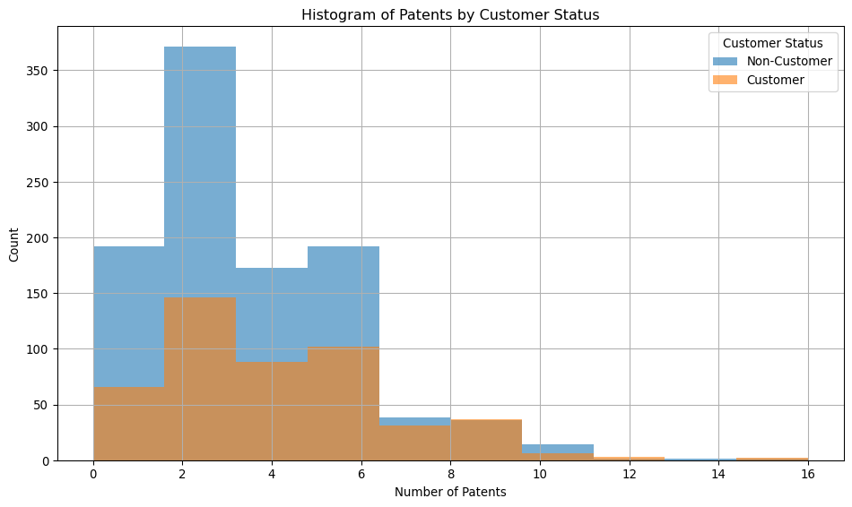
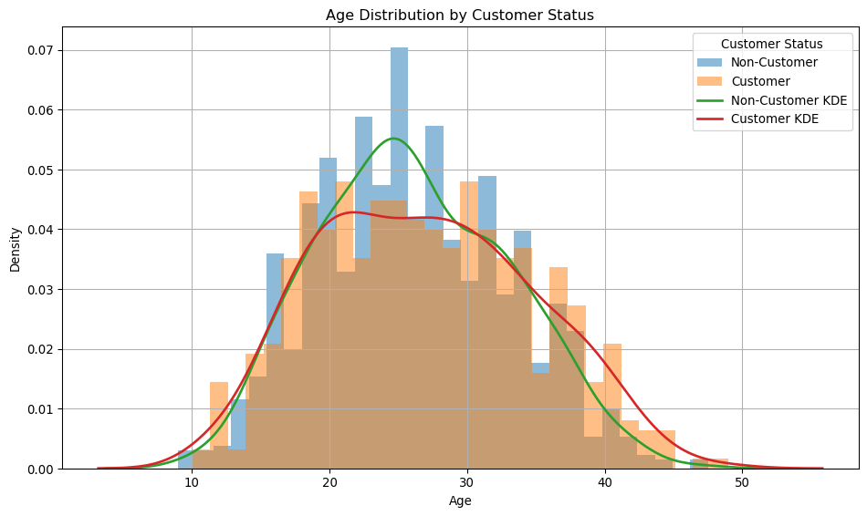
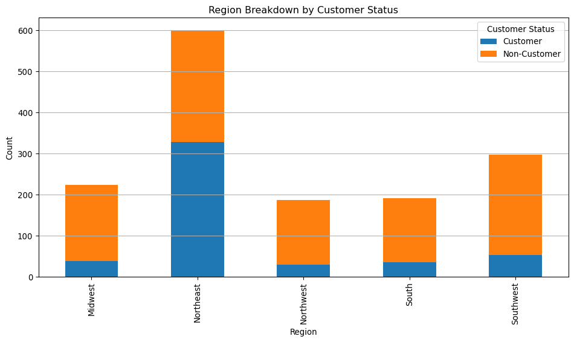
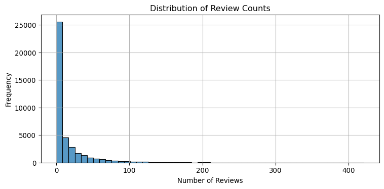

Blueprinty is a small firm that makes software for developing blueprints specifically for submitting patent applications to the US patent office. Their marketing team would like to make the claim that patent applicants using Blueprinty’s software are more successful in getting their patent applications approved. Ideal data to study such an effect might include the success rate of patent applications before using Blueprinty’s software and after using it. Unfortunately, such data is not available.
However, Blueprinty has collected data on 1,500 mature (non-startup) engineering firms. The data include each firm’s number of patents awarded over the last 5 years, regional location, age since incorporation, and whether or not the firm uses Blueprinty’s software. The marketing team would like to use this data to make the claim that firms using Blueprinty’s software are more successful in getting their patent applications approved.
Data
import pandas as pdimport numpy as npfrom scipy import statsimport statsmodels.formula.api as smf# Load dataairbnb= pd.read_csv('other_docs/airbnb.csv')blueprinty= pd.read_csv('other_docs/blueprinty.csv')print("Airbnb Data Preview:")print(airbnb.head())print("\n"+"-"*40+"\n")print("Blueprinty Data Preview:")print(blueprinty.head())# print(airbnb.columns)# print(blueprinty.columns)
Airbnb Data Preview:
Unnamed: 0 id days last_scraped host_since room_type \
0 1 2515 3130 4/2/2017 9/6/2008 Private room
1 2 2595 3127 4/2/2017 9/9/2008 Entire home/apt
2 3 3647 3050 4/2/2017 11/25/2008 Private room
3 4 3831 3038 4/2/2017 12/7/2008 Entire home/apt
4 5 4611 3012 4/2/2017 1/2/2009 Private room
bathrooms bedrooms price number_of_reviews review_scores_cleanliness \
0 1.0 1.0 59 150 9.0
1 1.0 0.0 230 20 9.0
2 1.0 1.0 150 0 NaN
3 1.0 1.0 89 116 9.0
4 NaN 1.0 39 93 9.0
review_scores_location review_scores_value instant_bookable
0 9.0 9.0 f
1 10.0 9.0 f
2 NaN NaN f
3 9.0 9.0 f
4 8.0 9.0 t
----------------------------------------
Blueprinty Data Preview:
patents region age iscustomer
0 0 Midwest 32.5 0
1 3 Southwest 37.5 0
2 4 Northwest 27.0 1
3 3 Northeast 24.5 0
4 3 Southwest 37.0 0
import matplotlib.pyplot as plt# Ensure correct typeblueprinty['iscustomer'] = blueprinty['iscustomer'].astype(int)# Filter groups correctlygroup_0 = blueprinty[blueprinty['iscustomer'] ==0]['patents'].dropna()group_1 = blueprinty[blueprinty['iscustomer'] ==1]['patents'].dropna()# Diagnosticsprint("Group 0 count:", len(group_0))print("Group 1 count:", len(group_1))# Mean number of patentsgrouped_means = blueprinty.groupby('iscustomer')['patents'].mean()print("Mean number of patents by customer status:")print(grouped_means)# Plotplt.figure(figsize=(10, 6))plt.hist(group_0, bins=10, alpha=0.6, label='Non-Customer')plt.hist(group_1, bins=10, alpha=0.6, label='Customer')plt.title('Histogram of Patents by Customer Status')plt.xlabel('Number of Patents')plt.ylabel('Count')plt.legend(title='Customer Status')plt.grid(True)plt.tight_layout()plt.show()
Group 0 count: 1019
Group 1 count: 481
Mean number of patents by customer status:
iscustomer
0 3.473013
1 4.133056
Name: patents, dtype: float64

🔍 Observations
Right-Skewed Distribution: Most individuals in both groups hold fewer patents, with frequency dropping as patent count increases.
Non-Customers Clustered at Lower Counts: Non-Customers (blue bars) are more concentrated in the 0–3 patent range.
Customers Show Higher Patent Counts: Customers (orange bars) are more spread out and more represented in the 4–9 patent range.
Overlap Exists: Both groups overlap between 2–6 patents, but customers have a longer right tail.
Few Outliers: Some individuals in both groups have 10+ patents, though these cases are rare.
🧠 Interpretation
Although non-customers are more numerous, they are concentrated at lower patent counts. Customers, despite being fewer in number, are more represented at higher patent levels, suggesting that customers have a higher average number of patents — which matches the earlier mean comparison.
These patterns suggest that customers tend to have more patents on average compared to non-customers. This aligns with earlier mean comparisons and may imply greater innovation or productivity among customers.
Blueprinty customers are not selected at random. It may be important to account for systematic differences in the age and regional location of customers vs non-customers.
🗺️ Region and Age Comparison by Customer Status
🔢 Summary Statistics
# Grouped summary of agesage_summary = blueprinty.groupby('iscustomer')['age'].describe()print("Age Summary by Customer Status:")print(age_summary)# Region counts by customer statusregion_counts = blueprinty.groupby(['iscustomer', 'region']).size().unstack(fill_value=0)print("\nRegion Counts by Customer Status:")print(region_counts)
Age Summary by Customer Status:
count mean std min 25% 50% 75% max
iscustomer
0 1019.0 26.101570 6.945426 9.0 21.0 25.5 31.25 47.5
1 481.0 26.900208 7.814678 10.0 20.5 26.5 32.50 49.0
Region Counts by Customer Status:
region Midwest Northeast Northwest South Southwest
iscustomer
0 187 273 158 156 245
1 37 328 29 35 52
🧠 Interpretation by Table: Age and Region by Customer Status
Customers tend to be slightly older (mean age 26.9 vs. 26.1) and more age-diverse than non-customers. Regionally, the Northeast has the highest concentration of customers, even exceeding the number of non-customers there. In all other regions, non-customers dominate, suggesting a geographic pattern in customer engagement.
📊 Age Distribution by Customer Status
import matplotlib.pyplot as pltimport seaborn as sns# Ensure correct type for filteringblueprinty['iscustomer'] = blueprinty['iscustomer'].astype(int)# Prepare data subsets using integer comparisongroup_0 = blueprinty[blueprinty['iscustomer'] ==0]['age'].dropna()group_1 = blueprinty[blueprinty['iscustomer'] ==1]['age'].dropna()# Plot histogram and KDE separatelyplt.figure(figsize=(10, 6))# Histogramsplt.hist(group_0, bins=30, alpha=0.5, density=True, label='Non-Customer')plt.hist(group_1, bins=30, alpha=0.5, density=True, label='Customer')# KDEssns.kdeplot(group_0, label='Non-Customer KDE', linewidth=2)sns.kdeplot(group_1, label='Customer KDE', linewidth=2)# Labels and formattingplt.title('Age Distribution by Customer Status')plt.xlabel('Age')plt.ylabel('Density')plt.legend(title='Customer Status')plt.grid(True)plt.tight_layout()plt.show()

🧠 Interpretation: Age Distribution by Customer Status
The age distribution shows that non-customers are more concentrated around the mid-20s, while customers have a flatter and slightly more spread-out distribution. The KDE curves reinforce this, with the customer curve (red) showing more density in older age ranges (30+), whereas the non-customer curve (green) peaks earlier and drops off faster. This suggests that customers are generally slightly older and more age-diverse than non-customers.
📍 Region Breakdown by Customer Status
📊 Region Breakdown by Customer Status
import matplotlib.pyplot as plt# Fix the data type and map labelsregion_plot = blueprinty.copy()region_plot['iscustomer'] = region_plot['iscustomer'].astype(int)region_plot['customer_label'] = region_plot['iscustomer'].map({0: 'Non-Customer', 1: 'Customer'})# Count and reshape dataregion_ct = region_plot.groupby(['region', 'customer_label']).size().unstack(fill_value=0)# Plotregion_ct.plot(kind='bar', stacked=True, figsize=(10, 6))plt.title('Region Breakdown by Customer Status')plt.xlabel('Region')plt.ylabel('Count')plt.legend(title='Customer Status')plt.tight_layout()plt.grid(axis='y')plt.show()

🧠 Interpretation: Region Breakdown by Customer Status
The stacked bar chart reveals clear regional patterns in customer status. The Northeast stands out with the largest customer base, where customers even outnumber non-customers — a unique trend not seen in other regions. In contrast, all other regions, especially the Midwest and Southwest, have a significantly higher number of non-customers, suggesting that customer engagement is regionally concentrated and strongest in the Northeast.
Estimation of Simple Poisson Model
Since our outcome variable of interest can only be small integer values per a set unit of time, we can use a Poisson density to model the number of patents awarded to each engineering firm over the last 5 years. We start by estimating a simple Poisson model via Maximum Likelihood.
🧠 Likelihood Function for Poisson
For a Poisson-distributed variable ( Y () ), the likelihood function is:
[ (| Y) = _{i=1}^n ]
Taking the log gives us the log-likelihood:
[ (| Y) = _{i=1}^n ( -+ Y_i () - (Y_i!) ) ]
🧮 Code: Poisson Log-Likelihood Function
import numpy as npimport matplotlib.pyplot as pltfrom scipy.optimize import minimizefrom scipy.special import gammaln # use this instead of factorial in log# Observed dataY = blueprinty['patents'].dropna().astype(int).values# Log-likelihood functiondef poisson_loglikelihood(lambda_, Y):if lambda_ <=0:return-np.infreturn np.sum(-lambda_ + Y * np.log(lambda_) - gammaln(Y +1))# Vectorized version for plottingdef poisson_loglikelihood_vec(lambda_, Y): lambda_ = np.asarray(lambda_)return np.array([ np.sum(-l + Y * np.log(l) - gammaln(Y +1))if l >0else-np.inf for l in lambda_ ])
Taking the derivative of the log-likelihood and setting it to zero yields:
[ = -n + = 0 _{} = {Y} ]
This makes intuitive sense, as the mean of a Poisson distribution is its only parameter.
🔧 Numerical Optimization
# Negative log-likelihood for optimizationdef neg_loglikelihood(lambda_):return-poisson_loglikelihood(lambda_[0], Y)# Optimizeresult = minimize(neg_loglikelihood, x0=[1.0], bounds=[(1e-5, None)])lambda_mle = result.x[0]print(f"MLE for lambda: {lambda_mle:.4f}")
MLE for lambda: 3.6847
✅ Conclusion
We estimated the Poisson parameter ( ) via maximum likelihood using both analytical and numerical approaches. As expected, the MLE aligns with the sample mean of the observed patent counts.
Estimation of Poisson Regression Model
Next, we extend our simple Poisson model to a Poisson Regression Model such that \(Y_i = \text{Poisson}(\lambda_i)\) where \(\lambda_i = \exp(X_i'\beta)\). The interpretation is that the success rate of patent awards is not constant across all firms (\(\lambda\)) but rather is a function of firm characteristics \(X_i\). Specifically, we will use the covariates age, age squared, region, and whether the firm is a customer of Blueprinty.
🎯 Estimate the Effect of Blueprinty’s Software
import pandas as pdimport statsmodels.api as smimport numpy as np# Prepare the datadf = blueprinty.copy()df = df.dropna(subset=['patents', 'age', 'region', 'iscustomer'])df['iscustomer'] = df['iscustomer'].astype(int)df['age_centered'] = df['age'] - df['age'].mean()df['age2_centered'] = df['age_centered'] **2df['intercept'] =1# Create dummy variables for region (drop first to avoid multicollinearity)region_dummies = pd.get_dummies(df['region'], drop_first=True)# Combine into design matrix and ensure all columns are numericX_sm = pd.concat([ df[['intercept', 'age_centered', 'age2_centered', 'iscustomer']], region_dummies], axis=1).astype(float) # ✅ Convert all to float# Outcome variableY = df['patents'].astype(float)# Fit Poisson modelmodel = sm.GLM(Y, X_sm, family=sm.families.Poisson())glm_results = model.fit()# Create datasets with iscustomer set to 0 and 1X_0 = X_sm.copy()X_0['iscustomer'] =0X_1 = X_sm.copy()X_1['iscustomer'] =1# Predict outcomesy_pred_0 = glm_results.predict(X_0)y_pred_1 = glm_results.predict(X_1)# Calculate average treatment effectaverage_treatment_effect = np.mean(y_pred_1 - y_pred_0)print("Average predicted increase in patents from using Blueprinty's software:")print(average_treatment_effect)
Average predicted increase in patents from using Blueprinty's software:
0.7927680710453278
📊 Interpretation: Effect of Blueprinty’s Software on Patent Success
To assess the effect of Blueprinty’s software, we estimated a Poisson regression model where the expected number of patents for each firm depends on age, age squared, region, and customer status. Because the coefficients in a Poisson model are on the log scale, we simulated two scenarios:
One where all firms are treated as non-customers (iscustomer = 0)
One where all firms are treated as customers (iscustomer = 1)
Using the fitted model, we predicted the number of patents under both scenarios and computed the difference for each firm.
✅ Result
The average treatment effect of using Blueprinty’s software is:
print(f"Average predicted increase in patents from using Blueprinty's software: {average_treatment_effect:.3f}")
Average predicted increase in patents from using Blueprinty's software: 0.793
This means that, on average, firms that are Blueprinty customers are predicted to earn approximately 0.79 more patents over 5 years than if they were not customers — holding all other factors constant.
🧠 Conclusion
Despite the customer coefficient being on the log scale and not directly interpretable, this simulation reveals a positive and practically meaningful effect of using Blueprinty’s software on patent output. This supports the hypothesis that access to Blueprinty’s tools may enhance firm innovation or efficiency.
AirBnB Case Study
Introduction
AirBnB is a popular platform for booking short-term rentals. In March 2017, students Annika Awad, Evan Lebo, and Anna Linden scraped of 40,000 Airbnb listings from New York City. The data include the following variables:
Variable Definitions
- `id` = unique ID number for each unit
- `last_scraped` = date when information scraped
- `host_since` = date when host first listed the unit on Airbnb
- `days` = `last_scraped` - `host_since` = number of days the unit has been listed
- `room_type` = Entire home/apt., Private room, or Shared room
- `bathrooms` = number of bathrooms
- `bedrooms` = number of bedrooms
- `price` = price per night (dollars)
- `number_of_reviews` = number of reviews for the unit on Airbnb
- `review_scores_cleanliness` = a cleanliness score from reviews (1-10)
- `review_scores_location` = a "quality of location" score from reviews (1-10)
- `review_scores_value` = a "quality of value" score from reviews (1-10)
- `instant_bookable` = "t" if instantly bookable, "f" if not
🏠 Airbnb Listing Analysis: Modeling Bookings via Review Counts
We assume that the number of reviews serves as a reasonable proxy for the number of bookings a listing receives. We aim to explore and model how listing features (e.g., price, room type, amenities) relate to this outcome using a Poisson regression framework.
🔍 Exploratory Data Analysis and Cleaning
import pandas as pdimport matplotlib.pyplot as pltimport seaborn as sns# Load dataairbnb = airbnb# Previewprint(airbnb.head())# Histogram of number of reviewsplt.figure(figsize=(8, 4))sns.histplot(airbnb['number_of_reviews'], bins=50, kde=False)plt.title('Distribution of Review Counts')plt.xlabel('Number of Reviews')plt.ylabel('Frequency')plt.grid(True)plt.tight_layout()plt.show()
Unnamed: 0 id days last_scraped host_since room_type \
0 1 2515 3130 4/2/2017 9/6/2008 Private room
1 2 2595 3127 4/2/2017 9/9/2008 Entire home/apt
2 3 3647 3050 4/2/2017 11/25/2008 Private room
3 4 3831 3038 4/2/2017 12/7/2008 Entire home/apt
4 5 4611 3012 4/2/2017 1/2/2009 Private room
bathrooms bedrooms price number_of_reviews review_scores_cleanliness \
0 1.0 1.0 59 150 9.0
1 1.0 0.0 230 20 9.0
2 1.0 1.0 150 0 NaN
3 1.0 1.0 89 116 9.0
4 NaN 1.0 39 93 9.0
review_scores_location review_scores_value instant_bookable
0 9.0 9.0 f
1 10.0 9.0 f
2 NaN NaN f
3 9.0 9.0 f
4 8.0 9.0 t

🧹 Data Preparation
# Select and clean relevant variablesdf = airbnb[['number_of_reviews', 'days', 'room_type', 'bathrooms', 'bedrooms', 'price', 'review_scores_cleanliness', 'review_scores_location', 'review_scores_value', 'instant_bookable']].copy()# Drop rows with missing valuesdf = df.dropna()# Convert instant_bookable from "t"/"f" to binarydf['instant_bookable'] = df['instant_bookable'].map({'t': 1, 'f': 0})# Create dummy variables for room_typeroom_dummies = pd.get_dummies(df['room_type'], drop_first=True)# Combine into final design matriximport statsmodels.api as smX = pd.concat([ df[['days', 'bathrooms', 'bedrooms', 'price', 'review_scores_cleanliness', 'review_scores_location', 'review_scores_value', 'instant_bookable']], room_dummies], axis=1)X = sm.add_constant(X)Y = df['number_of_reviews']
📈 Poisson Regression: Number of Reviews
# Ensure all variables are numeric to avoid ValueErrorX = X.astype(float)Y = Y.astype(float)# Fit Poisson regression modelpoisson_model = sm.GLM(Y, X, family=sm.families.Poisson())poisson_results = poisson_model.fit()# View regression outputprint(poisson_results.summary())
📌 Example: Interpreting a Poisson Regression Coefficient
In a Poisson regression model, coefficients represent changes in the log of the expected count (e.g., number of reviews). To interpret them in a more intuitive way, we exponentiate the coefficient to express the effect as a percentage change.
For example:
Holding all other variables constant, a 1-point increase in the cleanliness review score is associated with an approximate 11.31% increase in the expected number of reviews.
This interpretation comes from:
[ = ((0.1131) - 1) % ]
You can apply the same method to interpret other variables in the model.
🧠 Interpretation of Results
days: The longer a listing has been active on Airbnb, the more reviews it accumulates — as expected.
bedrooms: Listings with more bedrooms receive more reviews, likely reflecting larger or more attractive spaces.
bathrooms: Unexpectedly, more bathrooms are associated with slightly fewer reviews. This may reflect a subset of high-end listings with lower turnover.
price: A small negative relationship with reviews suggests that higher-priced listings may be booked less frequently.
instant_bookable: If significant, this would indicate that convenience boosts bookings.
room_type: Dummy variables capture how listing type (e.g., Private Room, Shared Room) affects bookings relative to the base category (Entire home/apt).
✅ Note: Coefficients in Poisson regression are on a log scale. For interpretability, exponentiating them gives the multiplicative effect on the expected number of reviews.
📌 Conclusion
This model helps us understand how listing attributes affect booking frequency. By identifying drivers of higher review counts (e.g., instant booking, number of bedrooms, lower price), hosts and platforms like Airbnb can make more data-informed decisions.